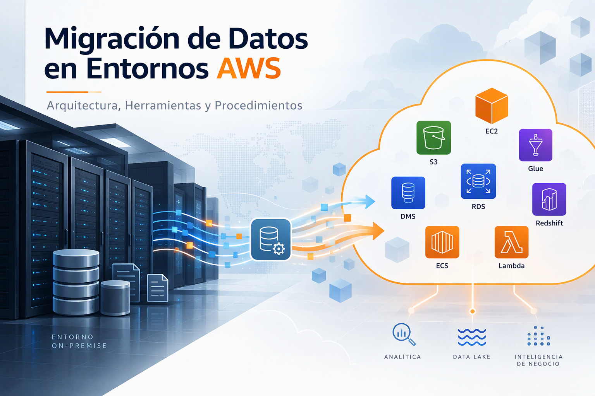
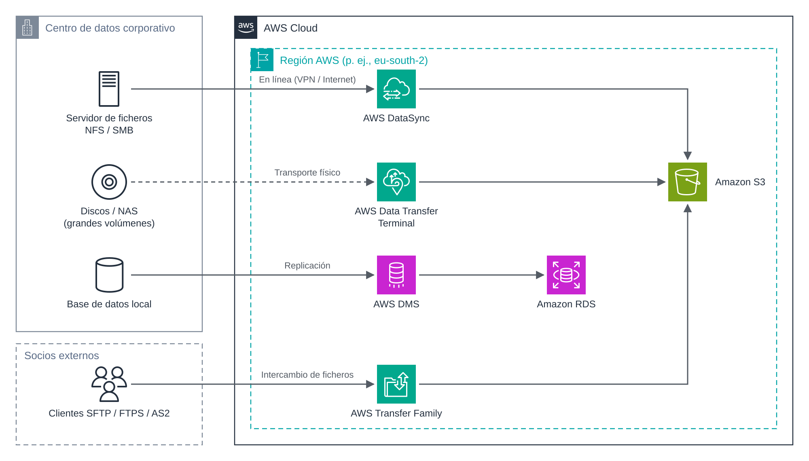

UD5 · 1. Fundamentos de la migración de datos¶

1. Introducción¶
Toda organización que adopta la nube se enfrenta, tarde o temprano, al problema de mover datos: ficheros de un servidor departamental, copias de seguridad, bases de datos de producción o intercambios periódicos con terceros. Esta operación, que en apariencia consiste simplemente en «copiar», condiciona en realidad el éxito de todo el proyecto: un traslado mal planificado puede provocar pérdida de datos, interrupciones del servicio o costes no previstos.
Este documento presenta el marco conceptual de la unidad: la terminología básica, las estrategias de migración, los criterios para elegir entre transferencia en línea y fuera de línea, el cálculo del tiempo de transferencia y el modelo de costes asociado.
Objetivos¶
Al finalizar esta sesión, el alumnado será capaz de:
- Distinguir entre transferencia, sincronización y migración de datos.
- Identificar la estrategia de migración adecuada (las 7R) para un caso dado.
- Estimar el tiempo de una transferencia a partir del volumen de datos y del ancho de banda disponible.
- Reconocer los componentes de coste de una transferencia en AWS.
2. Conceptos básicos¶
| Concepto | Definición | Ejemplo |
|---|---|---|
| Transferencia | Copia puntual de un conjunto de datos de un origen a un destino. | Subir el histórico de facturas de 2020 a un bucket S3. |
| Sincronización unidireccional | Copia periódica que replica en el destino los cambios producidos en el origen. | Cada noche se copian a S3 los ficheros nuevos o modificados del servidor NFS. |
| Sincronización bidireccional | Los cambios en cualquiera de los extremos se propagan al otro. Exige resolver conflictos. | Carpeta compartida entre la sede y la nube. |
| Migración | Traslado definitivo de datos (y, a menudo, del sistema que los usa) a un nuevo entorno, con un punto de corte (cutover). | Trasladar la base de datos de gestión a Amazon RDS y apagar el servidor local. |
Cualquiera de estas operaciones debe garantizar tres propiedades:
- Integridad: los datos llegan completos y sin alteraciones. Se verifica mediante sumas de comprobación (checksums) y recuentos.
- Seguridad: los datos están cifrados en tránsito y en reposo, y solo los perfiles autorizados intervienen en el proceso.
- Disponibilidad: el sistema de origen sigue prestando servicio durante el traslado, o la interrupción se reduce al mínimo aceptable.
3. Estrategias de migración: las 7R¶
AWS clasifica las estrategias de migración de aplicaciones en siete categorías, conocidas como las 7R. Aunque se formulan para aplicaciones completas, condicionan directamente qué se hace con los datos.
| Estrategia | Descripción | Implicación para los datos |
|---|---|---|
| Retire (retirar) | Se elimina la aplicación porque ya no aporta valor. | Archivado a largo plazo o borrado controlado. |
| Retain (retener) | Se mantiene en local, de momento. | Posible sincronización híbrida. |
| Rehost (lift and shift) | Se mueven las aplicaciones del entorno de origen al entorno Nube de AWS sin realizar ningún cambio en la aplicación. | Copia de discos o volúmenes completos. |
| Relocate (reubicar) | Se trasladan muchos servidores a la vez desde la plataforma local a su versión en la nube, o se mueven instancias u objetos de AWS a otra VPC, región o cuenta (p. ej., una instancia de Amazon RDS a otra cuenta). Sin cambios en la aplicación ni en la operación. | Los datos viajan con la plataforma o mediante instantáneas compartidas, copias entre regiones o replicación de S3. |
| Repurchase (drop and shop) | Sustituye la aplicación por una versión o producto diferente. | Exportación, mapeo e importación en el formato del nuevo producto. |
| Replatform (lift, tinker and shift o lift and reshape) | Se traslada con optimizaciones, pocas o muchas según los objetivos: servicio gestionado o sin servidor, sistema operativo actualizado, procesadores Graviton, paso de Windows a Linux o de máquinas virtuales a contenedores. | Migración de bases de datos a servicios gestionados; el estado de los contenedores pasa a EFS, S3 o una base de datos gestionada. |
| Refactor (rediseñar) | Se reescribe la aplicación para aprovechar servicios nativos de la nube. | Transformación de esquemas y formatos. |
Revisa la documentación oficial para más detalles
En migraciones grandes, AWS recomienda usar sobre todo Rehost, Replatform, Relocate y Retire, y modernizar las aplicaciones después de la migración. Refactor, la estrategia más compleja y costosa, se reserva para cuando ninguna otra es aceptable.
AWS organiza además todo proyecto de migración en tres fases:
- Evaluación (assess): inventario de datos, volúmenes, dependencias y requisitos legales.
- Movilización (mobilize): diseño de la arquitectura de destino, pruebas piloto y plan detallado.
- Migración y modernización (migrate and modernize): ejecución del traslado, validación y corte.
4. Transferencia en línea frente a fuera de línea¶
La primera decisión técnica es por dónde viajan los datos:
- En línea (online): a través de la red (Internet, VPN o AWS Direct Connect). Es la opción preferente en la gran mayoría de los casos.
- Fuera de línea (offline): los datos se copian en dispositivos físicos que se transportan hasta un punto de carga de AWS. Solo se justifica con volúmenes muy grandes o conectividad muy limitada.
La figura siguiente muestra el panorama de servicios que se estudiarán en la unidad y el tipo de origen al que responde cada uno.

Figura 1. Servicios de AWS para transferencia, sincronización y migración de datos según el tipo de origen.
| Servicio | Modalidad | Caso de uso principal | Documento |
|---|---|---|---|
AWS CLI (aws s3 cp/sync) |
En línea | Cargas sencillas y sincronizaciones ligeras hacia S3. | 2 |
| AWS DataSync | En línea | Transferencias y sincronizaciones gestionadas de grandes sistemas de ficheros. | 3 |
| AWS Transfer Family | En línea | Intercambio de ficheros con terceros mediante SFTP, FTPS, FTP o AS2. | 4 |
| AWS Database Migration Service | En línea | Migración y replicación de bases de datos. | Semana 2 |
| AWS Data Transfer Terminal | Fuera de línea | Carga física de dispositivos propios en una instalación de AWS. | 5 |
| AWS Snowball Edge | Fuera de línea | Envío de dispositivos de AWS. Solo para clientes existentes desde noviembre de 2025. | 5 |
5. Cálculo del tiempo de transferencia¶
El tiempo necesario para transferir un volumen de datos por red se estima con la expresión:
donde V es el volumen de datos, B el ancho de banda nominal y η la eficiencia real del enlace. Como valor de trabajo se suele tomar η = 0,8 (80 %), ya que nunca se dispone del ancho de banda completo.
Atención a las unidades. El volumen suele expresarse en bytes y el ancho de banda en bits por segundo. Hay que multiplicar por 8: 1 TB = 8 × 10¹² bits.
Ejemplo. Transferir 10 TB por una línea de 100 Mbps al 80 %:
| Volumen | 100 Mbps | 1 Gbps | 10 Gbps |
|---|---|---|---|
| 1 TB | 1,2 días | 2,8 horas | 17 minutos |
| 10 TB | 11,6 días | 1,2 días | 2,8 horas |
| 100 TB | 116 días | 11,6 días | 1,2 días |
Tabla calculada con η = 0,8 y unidades decimales.
Como criterio orientativo, la transferencia fuera de línea empieza a considerarse cuando el traslado por red supera una semana o cuando ocuparía un enlace que la organización necesita para su actividad diaria. Antes de descartarla, conviene valorar alternativas como ampliar temporalmente el ancho de banda o transferir solo los datos activos.
6. Modelo de costes¶
Una transferencia en AWS combina varios componentes de coste. Identificarlos todos es imprescindible para cumplir el criterio RA5.b.
| Componente | Descripción | Referencia orientativa |
|---|---|---|
| Entrada de datos a AWS | Datos que llegan desde Internet. | Gratuita. |
| Salida de datos desde AWS | Datos que salen hacia Internet. | Primeros 100 GB/mes gratuitos (agregados entre servicios); después, precio por GB según región y volumen. |
| Transferencia entre zonas o regiones | Tráfico entre zonas de disponibilidad o entre regiones. | Precio por GB. |
| Servicio de transferencia | Coste propio del servicio utilizado. | DataSync: 0,0125 USD/GB (modo básico). Transfer Family: 0,30 USD por hora y protocolo, más 0,04 USD/GB. |
| Peticiones | Operaciones sobre el destino (por ejemplo, PUT y LIST en S3). | Precio por cada 1000 peticiones. |
| Almacenamiento de destino | Coste mensual de los datos ya migrados. | Según clase de almacenamiento. |
Precios de referencia en US East (N. Virginia), consultados en noviembre de 2026. Pueden variar por región y cambiar con el tiempo.
Recomendaciones:
- Utilizar la AWS Pricing Calculator (https://calculator.aws) para estimar el coste completo antes de iniciar el proyecto.
- Prestar atención a los costes fijos por tiempo (por ejemplo, un servidor de Transfer Family se factura por hora mientras exista, aunque no se use).
- En el Learner Lab, el crédito es limitado. Hay que eliminar los recursos al terminar cada práctica.
7. Selección de la región y residencia de los datos¶
La región de destino condiciona la latencia, el coste y el cumplimiento normativo:
- Residencia de los datos: el Reglamento General de Protección de Datos (RGPD) exige garantías adicionales cuando los datos personales salen del Espacio Económico Europeo. Las regiones europeas (por ejemplo,
eu-south-2, en España) facilitan su cumplimiento. - Disponibilidad de servicios: no todos los servicios ni todas sus funciones están disponibles en todas las regiones. Se debe consultar la lista de servicios por región.
- Entorno de prácticas: el Learner Lab restringe las regiones utilizables (habitualmente
us-east-1yus-west-2). En las prácticas se trabajará en ellas, aunque en un proyecto real se elegiría una región europea.
8. Ideas clave¶
- Transferir, sincronizar y migrar son operaciones distintas; todas deben preservar la integridad, la seguridad y la disponibilidad.
- La estrategia de migración (7R) determina qué se hace con los datos.
- La transferencia en línea es la opción preferente; la fuera de línea se reserva para volúmenes muy grandes o redes insuficientes.
- El tiempo de transferencia se estima con el volumen, el ancho de banda y una eficiencia realista.
- El coste total incluye la salida de datos, el servicio, las peticiones y el almacenamiento, no solo el precio por GB.
9. Preguntas de autoevaluación¶
- Una empresa quiere trasladar 40 TB por una línea de 500 Mbps. Estima el tiempo de transferencia con una eficiencia del 80 %. ¿Recomendarías una transferencia en línea?
- ¿Qué estrategia de las 7R aplicarías a un servidor MySQL que se quiere trasladar a Amazon RDS sin modificar la aplicación?
- ¿Por qué la entrada de datos a AWS es gratuita, pero no siempre lo es la migración completa?
Referencias¶
- AWS. Migration strategies (AWS Prescriptive Guidance). https://docs.aws.amazon.com/prescriptive-guidance/latest/large-migration-guide/migration-strategies.html
- AWS. Acerca de las estrategias de migración (AWS Prescriptive Guidance). Español. https://docs.aws.amazon.com/es_es/prescriptive-guidance/latest/large-migration-guide/migration-strategies.html
- AWS. AWS DataSync pricing. https://aws.amazon.com/datasync/pricing/
- AWS. AWS Transfer Family pricing. https://aws.amazon.com/aws-transfer-family/pricing/
- AWS. AWS Pricing Calculator. https://calculator.aws